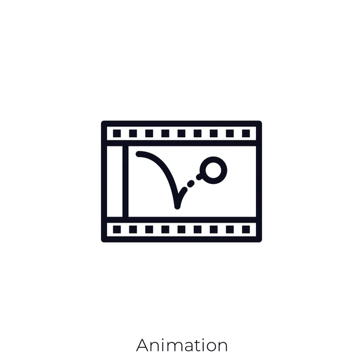
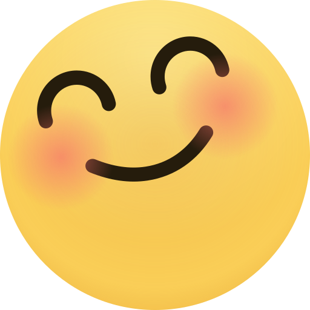
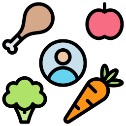
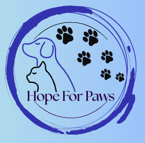

Project 1: Creating An Animation
In Project Stem, our assignment was to use the skills that we learned to create an animation using Python. In my opinion, it was hard, considering we had to be specific with what x and y coordinates would make a shape move. It was an experience because I based my animation on outer space.
 View ProjectProject 2: Emoji Faces
In this project we created our emoji faces with the help of Python. We learned different commands such as circle, square, ellipse, etc; It was fun, not only for me, but for everyone who had different faces and ideas.
 View ProjectProject 3: Ear Sketch
Ear Sketch is a platform where even music coding applies. We can create remixes from instrumentals that other artists originally created. This is a learning experience because it shows those who are passionate about music can implement their coding skills in creating music.
 View Project
View Project
Project 4: MOOD APPEAL - INFY APP CHALLENGE
In the INFY APP Challenge, we had to create an app for a user group based on important issues. In this case, our group decided to create an app about nutrition, along with our main aspect, how different foods impact our mood. We conducted research by interviewing our age group such as high schoolers. This project consisted of us having to, as our teacher always said 'tap into your empathy' truly brought the app together to have qualities that the users would have that would make their experience in the app helpful.
 View ProjectProjetct SYLE YOUR WAY
This website is created to promote a place where those that want to adopt a pet can because for long time companion, for emotional support, or to create new experiences There is more to when it comes to adopting a pet. For example, being aware of your envoriment at home, whether you can be responsible for owning a pet, and etc;
 View Project